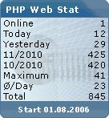

Counter
We also provide a seperate counter you can include in your homepage to show your visitors the actual statistic values.
Please use the following code to include the counter in your homepage.
<iframe name="stat_counter" src="http://www.example.com/stat/counter.php" style="width:140px; height:150px; border:none; overflow:hidden;"></iframe>
Please be aware that you change the domain path to your own server. You got to put the full external path to your counter.php in that.
The fact that the path to your counter script is an external one, gives you the possibility to display the counter on sites laying in subfolders of your server.
The values of width and height depend on the settings in the admincenter or in the css theme. So you have to edit these settings.
Change the language
If you want to display the counter in another language on your site, please use the following code right after the word counter.php:
- for Englisch?language=en
- for Dutch?language=nl
- for Italian?language=it
Example: ...stat/counter.php?language=en
The PHP Web Stat will be shipped with german and english language support only.
Support for other languages are available on our website. Please unzip the downloaded language module and copy it into the language folder on your server.
Which language modules are available you can see in the language folder.
Editing the appearance with CSS
If you want to change the color, positions, or the font of the counter, please change all settings in the Admin-Center.